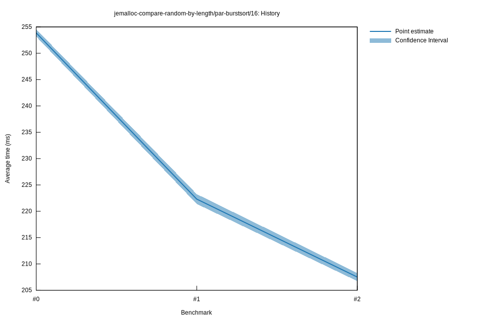

# 22021-08-05T15:12:09-05:00
|
Lower Bound |
Estimate |
Upper Bound |
| Value: |
206.75ms |
207.51ms |
208.28ms |
| Throughput: |
38.70 elem/s |
38.55 elem/s |
38.41 elem/s |
| Change in Value: |
-7.1762% |
-6.6577% |
-6.1516% |
| Change in Throughput: |
+7.7310% |
+7.1326% |
+6.5549% |
No change in performance detected.
# 12021-08-05T10:34:23-05:00
|
Lower Bound |
Estimate |
Upper Bound |
| Value: |
221.39ms |
222.31ms |
223.26ms |
| Throughput: |
36.13 elem/s |
35.99 elem/s |
35.83 elem/s |
| Change in Value: |
-12.866% |
-12.430% |
-11.988% |
| Change in Throughput: |
+14.765% |
+14.194% |
+13.621% |
No change in performance detected.
# 02021-08-05T10:02:18-05:00
|
Lower Bound |
Estimate |
Upper Bound |
| Value: |
253.17ms |
253.87ms |
254.56ms |
| Throughput: |
31.60 elem/s |
31.51 elem/s |
31.43 elem/s |